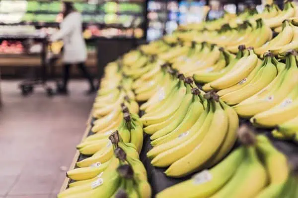
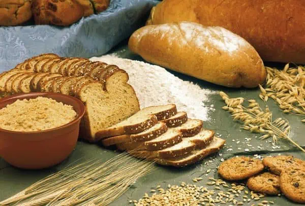
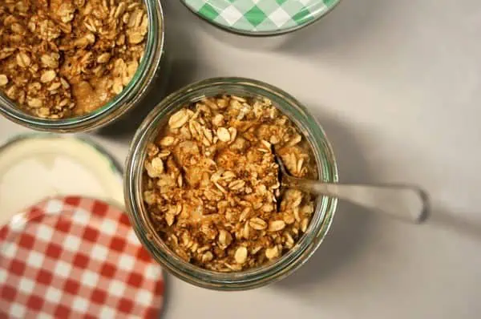

-

1. Banana
Bursting with natural sugars for a quick energy kick and packed with potassium, these yellow powerhouses are the ultimate sassy fuel. Bananas are a great source of carbs and are one of the best foods to consume before a workout. It provides the body with energy for the workout. Bananas are also high in potassium which helps to promote muscle functions and prevent cramps during any physical activity. Following an Indian gym diet plan will play a crucial role in achieving your fitness goals.
-

2. Whole Grain Bread
Whole grain bread can be a beneficial addition to a weight loss diet due to its high fiber content, which promotes feelings of fullness and helps control appetite. Rich in essential nutrients and lower in glycemic index compared to white bread, whole grain bread supports stable blood sugar levels, reducing cravings and aiding in portion control. Its fiber content also promotes digestive health, aiding in regular bowel movements
-

3. Oats
Oats provide the body with carbs and fibre. These are great breakfast options and can also be consumed before a workout. Oats provide the body with a slow release of energy which lasts for longer. You should definitely add this to your Indian gym diet plan.